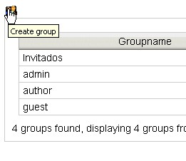

Group Management |
A group is bunch of customers who share the same permissions; it is identified from an univocal name and it
can have a description.
Only the Administrator user can access the maintenance page from the main menu path: Administration --> Groups.
In the main form it will become shown the directory of the available groups on the system.
The possible operations are the usual ones for management: creation, modification, erasure.
Adding a Group
Similarly to the mask for customers, clicking Create group icon, it is shown the demanded mask.

It is sufficient to specify a name and a description and to confirm with the Save button.
As an example, it is possible to create a group for a department or a work group and to specify in the
description this relation.
It is also possible, to specify one or more groups of affiliation; in this case the new group will copy the
reading/writing permissions to be assigned.
Modifying a Group
- access the management page (Administration --> Group)
- select the Modification group icon in order to modify the description of the group or
the basket for the erasure.
| In the system, the group is a structural element that serves to assign security privileges. Use the groups only to facilitate the definition of the privileges and in order to make simple groupings of customers. By default, three groups are already present: admin, author and guest. You introduce new groups if really necessary. | |